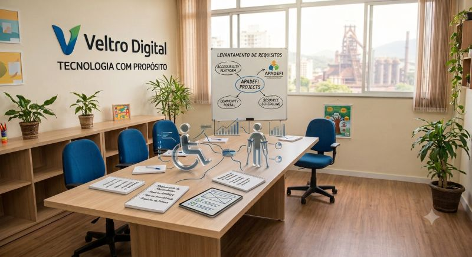

Início · Soluções · Associações
AssociaçõesPlataformas
Plataformas para Associações
Soluções digitais para entidades e associações — como a APADEFI e outros projetos de presença e gestão institucional — desenhadas a partir do processo real da organização.
A dor do cliente
Associações acumulam processos manuais, comunicação fragmentada com associados e sites que não refletem o papel institucional. Sem um sistema alinhado à operação, a gestão perde tempo e clareza.
Como chegamos à solução
01
Levantamento
Reuniões com a diretoria e operação para mapear associados, comunicação e prioridades.
02
Detalhamento
Business case, escopo da plataforma e critérios de sucesso alinhados à missão da entidade.
03
Desenvolvimento
Entrega sob medida: presença digital, fluxos internos e canais que realmente serão usados.
O que essas soluções cobrem
- Presença institucional e comunicação com associados
- Fluxos de gestão adaptados à realidade da entidade
- Proposta e detalhamento antes do código
- Evolução por fases, sem exagero tecnológico

LinkedIn
Tecnologia com propósito: quando o código transforma vidas
A equipe da Veltro Digital reuniu-se com a APADEFI (Associação de Pais e Amigos dos Deficientes Físicos de Volta Redonda) para levantamento de requisitos — mapear gargalos e desenhar soluções que levem autonomia, suporte e dignidade às pessoas atendidas.
Ver post completo no LinkedIn →